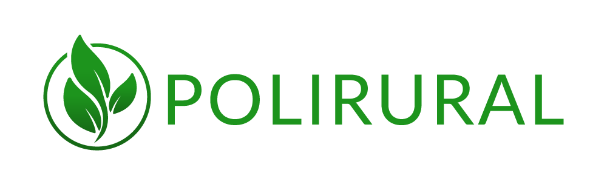

<md-toolbar class="md-hue-2">
    <div class="md-toolbar-tools">
        <!-- <md-button class="md-icon-button" aria-label="Filter" ng-click="leftSidenavOpen ? closeLeftSidenav() : openLeftSidenav()">
            <md-icon class="material-icons">filter_list</md-icon>
        </md-button> -->
        <a href="https://polirural.eu/" target="_blank"></a>
        <h2>The Best Practices Atlas - Polirural</h2>

        <div flex></div>

    </div>
</md-toolbar>
